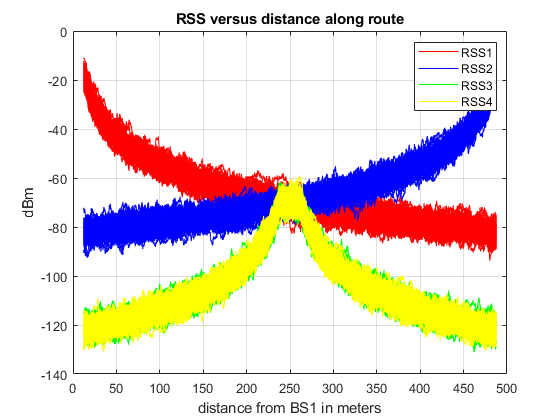
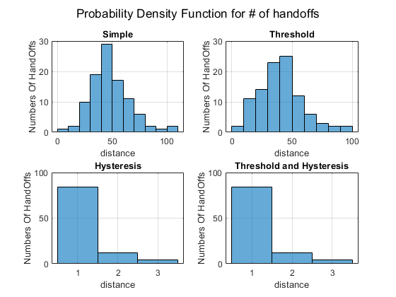
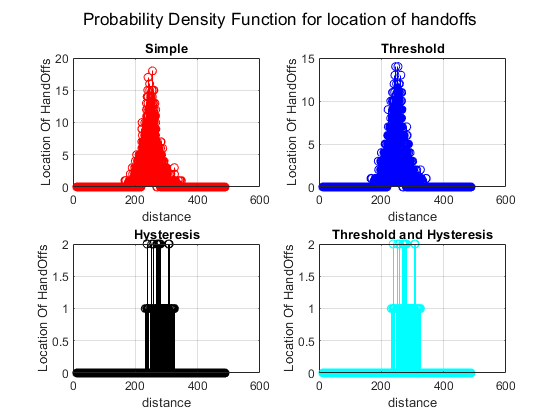

Contents
- Project1
- Preexplainations
- Clear Recent Data
- Initialization
- Part 1: Computations independant of the
- Part 2: Adding the random variable for
- Plot the RSS values obtained
- Algorithm Section
- a - Simple RSS
- HandOff Locations
- b - RSS with Threshold
- HandOff Threshold
- c - RSS with Hysteresis
- HandOff Hysteresis
- d - RSS with Hysteresis and Threshold
- HandOff Hyst with Threshold
- CalCulating PDF for # of HandOff s
- Plotting PDF for # of HandOff s
- CalCulating PDF for Location of HandOff s
- Plotting PDF for # of HandOff s
Project1
Teacher : Dr Mohammadi Author: [SeyedAli] - [SeyedHosseini] E-mail: [alishosseini79@aut.ac.ir]
%Student-Number : [9723042] % University: Amirkabir University of Technology
Preexplainations
This program computes 1 set of 4 RSS from
%each of the four BS % For the project, you need to augment the program: % 1. Implement the handoff algorithms that use %RSS1,2,3,4 as inputs % 2. Include a loop so that you can have 100 %sets of the 4 RSS % (Hint: RSS of different sets only differ due to the % random variable of shadow fading) % 3. In the loop store variable data between iterations % that will be used to make the final histograms/PDFs
Clear Recent Data
clc; close all; clear; % addpath('D:\Mobile Communications\Project1') %add the path for the rest of session
Initialization
Declare the various variables used for...
%distances and compute RSS R = 250; %distance of block L = 2 * R; speed = 1; %Speed of mobile host sample_time = 0.1; %sampling time step_distance = speed * sample_time; g = 150; min_distance = sqrt(g); %first point max_distance = L - sqrt(g); %last point d1 = [min_distance:step_distance:max_distance]; d2 = L - d1; d3 = abs(R - d1); d4 = abs(R - d1); Ns = length(d1); Th = -68; %Threshold H = 5; %Hysteresis
Part 1: Computations independant of the
%random variable % for shadow fading Pt = 20; Po = 38; grad1 = 2; grad2 = 2; alpha = exp(-1/85); sigma1 = sqrt(8); sigma2 = sqrt(sigma1^2 * (1 - alpha^2)); RSS01 = Pt - Po - (10 * grad1 * log10(d1) + ... 10 * grad2 * log10(d1/g)); RSS02 = Pt - Po - (10 * grad1 * log10(d2) +... 10 * grad2 * log10(d2/g)); RSS_corner = Pt - Po - (10 * grad1 * log10(R)... + 10 * grad2 *log10(R/g)); RSS03 = RSS_corner - (10 * grad1 * log10(d3)... + 10 * grad2 *log10(d3/g)); RSS04 = RSS_corner - (10 * grad1 * log10(d4) ... + 10 * grad2 *log10(d4/g)); for i=1:Ns %for the first point if d3(i) < min_distance RSS03(i) = RSS_corner; end; if d4(i) < min_distance RSS04(i) = RSS_corner; end; end;
Part 2: Adding the random variable for
shadow fading to 100 RSS datas
iter = 100; %number of iterations RSS1=zeros(iter,Ns);RSS2=zeros(iter,Ns);%preallocation RSS3=zeros(iter,Ns);RSS4=zeros(iter,Ns);%preallocation %the loop for 100 datas for i = 1 : iter s1(1) = sigma1 * randn(1); s2(1) = sigma1 * randn(1); s3(1) = sigma1 * randn(1); s4(1) = sigma1 * randn(1); for j=2:Ns s1(j) = alpha * s1(j-1) + sigma2 * randn(1); s2(j) = alpha * s2(j-1) + sigma2 * randn(1); s3(j) = alpha * s3(j-1) + sigma2 * randn(1); s4(j) = alpha * s4(j-1) + sigma2 * randn(1); end; RSS1(i,:) = RSS01 + s1; RSS2(i,:) = RSS02 + s2; RSS3(i,:) = RSS03 + s3; RSS4(i,:)= RSS04 + s4; end
Plot the RSS values obtained
clc; figure(1) RSS11 = plot(d1, RSS1,'r'); hold on; RSS22 = plot(d1, RSS2,'b'); hold on; RSS33 = plot(d1, RSS3,'g'); hold on; RSS44 = plot(d1, RSS4,'y');hold off legend([RSS11(1),RSS22(1),RSS33(1)... ,RSS44(1)],'RSS1','RSS2','RSS3','RSS4') grid on; title('RSS versus distance along route') xlabel('distance from BS1 in meters'); ylabel('dBm'); axis([0 500 -140 0])
Algorithm Section
As we`ve seen, 100 RSS 1 -4 datas are ready let`s write the rest of detection code
a - Simple RSS
BS_Simp=zeros(iter,Ns); %BaseStation of % each pont for i=1:iter BS_cur=1; %Current BaseStation Index for j=1:Ns RSS=[RSS1(i,j) RSS2(i,j) RSS3(i,j)... RSS4(i,j)]; %Temporary variable for saving % RSS in each loop [Mx,IndMx]=max(RSS); %Saving maximum % and index of RSS if IndMx ~= BS_cur BS_cur=IndMx; %check if current basestation %is equal to maximum Basestation [Power] end BS_Simp(i,j)=BS_cur; %Updating the maximum %basestation end end
HandOff Locations
HandOff=zeros(iter,Ns);%HandOff Locations for i=1:iter for j=2:Ns if BS_Simp(i,j) ~= BS_Simp(i,j-1) %Anytime BS power changed, We must % have HandOff HandOff(i,j)=1; end end end
b - RSS with Threshold
clc; BS_thrsh = zeros(iter,Ns) ;%Preallocation for i = 1 : iter BS_cur =1; %Current BaseStation Index for j=1:Ns RSS=[RSS1(i,j) RSS2(i,j) RSS3(i,j)... RSS4(i,j)]; %Temporary variable for saving % RSS in each loop [Mx,IndMx]=max(RSS); %Saving maximum % and index of RSS if IndMx ~= BS_cur if RSS(BS_cur) <= Th BS_cur = IndMx; %check if current ... %basestation %is less than Threshold Basestation... %[Power] end end BS_thrsh(i,j)=BS_cur; %Updating the maximum %basestation end end
HandOff Threshold
HandOffThresh=zeros(100,Ns);%HandOff %with Threshold Locations for i = 1 : iter for j=2:Ns if BS_thrsh(i,j) ~= BS_thrsh(i,j-1) %Anytime BS power changed, We must % have HandOff HandOffThresh(i,j)=1; end end end
c - RSS with Hysteresis
clc; BS_Hyst = zeros(iter,Ns); %Preallocation for i = 1 : iter BS_cur =1; %Current BaseStation Index for j=1:Ns RSS=[RSS1(i,j) RSS2(i,j) RSS3(i,j)... RSS4(i,j)]; %Temporary variable for saving % RSS in each loop [Mx,IndMx]=max(RSS) ; %Saving maximum % and index of RSS if IndMx ~= BS_cur ... && RSS(BS_cur) + H <= Mx - H BS_cur = IndMx; %check if current ... %basestation %is less than Hystersis plus Basestation... %[Power] end BS_Hyst(i,j)=BS_cur; %Updating the maximum %basestation end end
HandOff Hysteresis
HandOffHyst=zeros(iter,Ns);%HandOff %with Hysteresis Locations for i = 1 : iter for j=2:Ns if BS_Hyst(i,j) ~= BS_Hyst(i,j-1) %Anytime BS power changed, We must % have HandOff HandOffHyst(i,j)=1; end end end
d - RSS with Hysteresis and Threshold
clc; BS_HTh = zeros(iter,Ns); %Preallocation for i = 1 : iter BS_cur =1; %Current BaseStation Index for j=1:Ns RSS=[RSS1(i,j) RSS2(i,j) RSS3(i,j)... RSS4(i,j)]; %Temporary variable for saving % RSS in each loop [Mx,IndMx]=max(RSS) ; %Saving maximum % and index of RSS if IndMx ~= BS_cur ... && RSS(BS_cur) + H <= Mx - H && ... RSS(BS_cur)<= Th BS_cur = IndMx; end BS_HTh(i,j) = BS_cur; end end
HandOff Hyst with Threshold
HandOffHystTher=zeros(iter,Ns);%HandOff %with Threshold and Hysteresis Locations for i = 1 : iter for j=2:Ns if BS_HTh(i,j) ~= BS_HTh(i,j-1) %Anytime BS power changed, We must % have HandOff HandOffHystTher(i,j)=1; end end end
CalCulating PDF for # of HandOff s
Summation on 2nd Dimension to Get Nums
clc; H_SimpNum = sum(HandOff,2); H_OffHystNum = sum(HandOffHyst,2); H_HystTherNum = sum(HandOffHystTher,2); H_TherNum = sum(HandOffThresh,2); HH = [H_SimpNum,H_TherNum,H_OffHystNum,H_HystTherNum... ]; Name = {'Simple', 'Threshold', 'Hysteresis', 'Threshold and Hysteresis'};
Plotting PDF for # of HandOff s
clc figure(2) sgtitle('Probability Density Function for # of handoffs') for i = 1 : 4 subplot(2,2,i) histogram(HH(:,i)) title(Name(i)) grid on; xlabel("distance") ylabel("Numbers Of HandOffs") % axis([0 110 0 50]) end
CalCulating PDF for Location of HandOff s
Summation on 1st Dimension to Get Locations
clc;
H_Simploc = sum(HandOff,1);
H_OffHystloc = sum(HandOffHyst,1);
H_HystTherloc = sum(HandOffHystTher,1);
H_Therloc = sum(HandOffThresh,1);
HL = zeros(4,4756);
HL(1,:) = H_Simploc;
HL(2,:) = H_Therloc;
HL(3,:) = H_OffHystloc ;
HL(4,:) = H_HystTherloc;
Name = {'Simple', 'Threshold', 'Hysteresis', ...
'Threshold and Hysteresis'};
Color = {'r', 'b', 'k', 'c'};
Plotting PDF for # of HandOff s
clc figure(3) sgtitle('Probability Density Function for location of handoffs') ; for i = 1 : 4 subplot(2,2,i) stem(d1',HL(i,:),'color',Color{i}) title(Name(i)) grid on; xlabel("distance") ylabel("Location Of HandOffs") % axis([0 110 0 50]) end